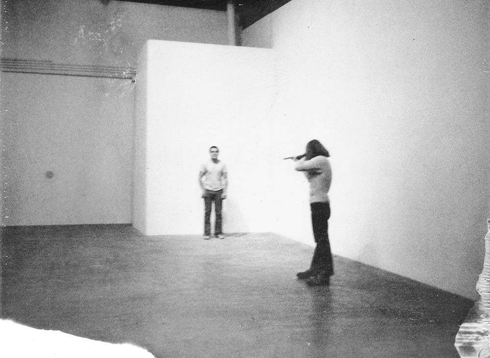
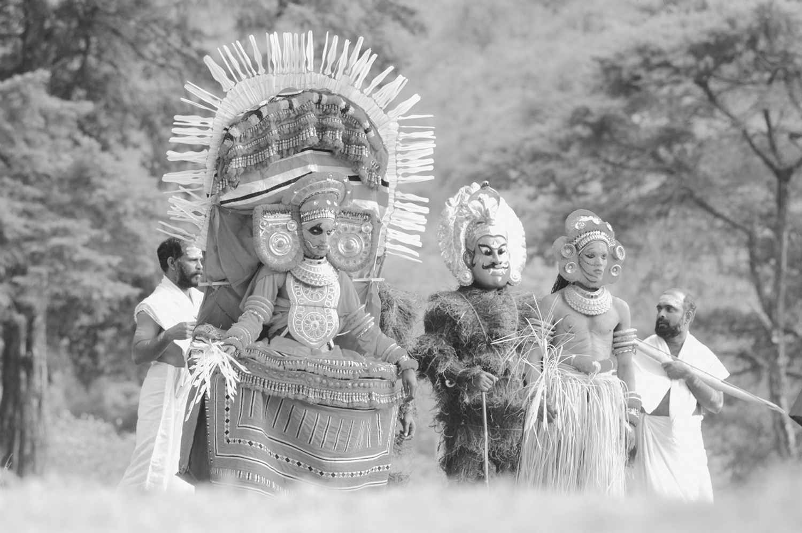

20世纪最后的25年间，表演这个与演剧学相关的术语声名鹊起，首先在美国，然后是欧洲，到20世纪末便传遍全世界。这主要是因为欧洲（特别是西欧）和美国在演剧学（戏剧表演研究）以及在创立和推广演剧学及其相关领域新理论并付诸实践方面，走在世界的前列。表演在欧洲和美国日益为演剧学学者所重视，他们的表演理论和实践便不可避免地传播到全球各地。
戏剧的词义在各种欧洲语言中彼此多少有些差异，但无疑欧洲人都一致认为戏剧这门艺术起源于古希腊，戏剧这个词汇也是出自古希腊，而表演这个术语的语言学背景却大不相同。如同很多现代英语词汇，perform（表演）这个词源自古法语parfournir，意思是“做”或“施行”。尽管现代法语词汇fourni（及其相关的英语词汇furnish）也是源自古法语parfournir，但英语的performance却在现代法语中找不到对应的词来表示，尤其是它在英语中已经衍生出很多不同的含义。这种情形也发生在罗曼语族的其他语言中，其他欧洲语言也是如此。这样，尽管现在世界各地都很熟悉“表演”这个术语，它却像“计算机”或“互联网”一样，是源自现代英语。随之而来的是这个术语的各种各样的用法，这些用法几乎都滥觞于美国的理论家著述，而表演这个词的现代概念就是在美国发展起来的。即便在美国，这个术语也适用于五花八门的现象，但是要了解这个词的含义及其对演剧的影响，最好的办法是先了解这个术语在美国的发展历程，以及这个术语所关涉的事项。在那里，这个词的现代用法随着表演与演剧之间关系的各种各样的模式一起演变。
现代对表演的兴趣可以追溯到20世纪70年代早期艺术界、学院派戏剧以及社会科学（特别是社会学和人类学）这几个领域的动态发展。有别于传统戏剧的兴趣点，艺术界对作为艺术媒介的人体的运作所生发的某种兴趣，在整个20世纪名目繁多的实验艺术运动中，在未来主义、达达主义、阿伦·卡普罗的偶发艺术、激浪派的作品中都能找到。但总体上，这些运动仍然局限于视觉艺术领域。诚然，参与其间的一些最负盛名的艺术家，如卡普罗，特别声明他们的艺术无关戏剧表演，无关戏剧表演既定的程序、假设和规则。
20世纪70年代早期，针对人体活动的作品成为传统艺术之外的概念艺术的一个越来越重要的组成部分。“身体艺术”“行为艺术”以及时不时被人提及的“生活艺术”等术语在那时开始应用到这样的作品中。其中有些效法数十年前卡普罗的偶发艺术，展演诸如行走、睡眠、进食或饮水这样的日常活动；其他人则把身体推向生理极限，甚至到危险的程度。最臭名昭著的也许是1971年的行为艺术表演《射击》，表演中，艺术家克里斯·伯登的一位朋友用一粒真实的步枪子弹射中他的左臂（图7）。

图7 克里斯·伯登1971年的作品《射击》。伯登的说明：“晚上7点45分，我的左胳膊被我朋友射中。子弹外壳包铜，步枪口径0.22英寸。我的朋友正站在离我大约15米的地方。”
虽然这样骇人的表演吸引了媒体的大部分注意，但这些极端事例代表的只是正在成为艺术表现中一种重要新兴手段的极小一部分，介乎戏剧表演和概念艺术之间并涉及人体，一般单独出现而不成气候。尽管卡普罗和其他艺术家继续推动行为艺术与戏剧表演分离，这两种艺术形式却在20世纪70年代稳步地变得更加紧密。这种聚合中最重要的或许是女性主义表演。差不多凭定义就知道女性主义表演几乎从不缺乏话语性内容，它常常沿袭戏剧表演中的独白这样悠久的传统，但话题却很具体，讲述的都是当代社会里女性的具体经历，通常带有自传的性质。男性和男性表演主宰了早期的行为艺术，而20世纪70年代则目睹了女性主义表演的兴盛，反映了那个年代在整个艺术与文化领域迅猛发展的女性诉求，尤其是在美国。以琳达·蒙塔诺和瑞秋·罗森塔的作品为代表，南加利福尼亚州一马当先，走在女性主义表演的前列，而纽约则是女性主义表演的另一个重镇，这里有众多极为著名的女性行为艺术家，包括小野洋子、卡罗李·席尼曼和劳瑞·安德森。
就在行为艺术的观念和实践变得日益重要，且越来越突出的时候（到了20世纪80年代，《纽约时报》的“艺术与休闲版”定期刊出“表演”专栏，与“戏剧”和“音乐”并列），表演这个术语却在社会科学和戏剧学领域获得新的意义。英语中，“表演”与“戏剧”有着悠久的关联，尽管如前所说，在其他联系密切的欧洲语言中，两者没有像在英语中联系得那么紧密。“表演”的动词形式可以追溯到欧洲中世纪晚期，但到了莎士比亚的时代，这个动词与戏剧和音乐作品的上演之间产生了特别的联系；“表演”的名词形式据说在1709年首次被理查德·斯蒂尔使用，用来在他创办的《闲聊者》早期的一篇文章中指称演员托马斯·贝特顿的一次义演。从此以后，“一场表演（演出）”便成为一个通用的英语术语，用来表示特定的演剧场合中演员呈现的作品，例如“理查德·伯登表演的哈姆雷特棒极了”，或表示演剧场合本身，例如“这部戏有三百场演出”。在英语中，表演这个术语与“演剧”和“戏剧文学”一样广为人知。然而，20世纪70年代，“表演”的使用开始具有完全不同的内涵，它与演剧如此分离，以至于今日的英语世界里（且不止于此），研究“演剧与表演”的科研院所、学术会议和学术出版物比比皆是。尽管这种分离发生在演剧学界内部，但起因却来自其他学科的发展，特别是社会科学的发展，而不是因为同时期现代行为艺术的出现和繁荣，虽然这个可能的影响因素似乎更为直接。
20世纪50到70年代，社会科学研究的方法论发生了重大转向，这个转向后来被称为“表演转向”（performative turn）。促成这种转向的主要人物是肯尼斯·伯克，一位美国文学理论家和哲学家。他最早使用戏剧语言和隐喻来增进对社会和文化现象的理解，并称这一方法为“戏剧主义”。在其两部重要的著作（《动机语法》和《动机修辞》）中，他把人类互动解读为一系列或多或少有意识地“搬演”的事件，目的是为了对他人施加影响。这个研究思路偏离了那种更加抽象的象征和结构模型来研究日常互动和具体实践的交际策略，使接下来数十年间的人类学、社会学、人种学、心理学和语言学中大多数最重要最具创意的研究都带上了这种研究特点。
从此，作为一种分析工具的“表演”概念便迅速地传遍社会科学领域。的确，这个概念的萌生可以追溯到20世纪50年代的最后几年。这个过程的中心人物便是欧文·戈夫曼，可以说他是20世纪美国最有影响力的社会学家。他最著名的著作是出版于1959年的《日常生活中的自我呈现》，在这部书里戈夫曼详细地阐述了他所谓的“拟剧分析”，在这方面有意或无意地回应了伯克的“动机”理论。这部书的第一章标题即为“表演”，戈夫曼将其定义为“发生在某个人不间断地面对某一特定群体的观察者并对这群观察者施加某些影响的时期展开的所有个人行为”。虽然戈夫曼把这一定义应用于各种各样的社会互动，但要是意识到这个定义可以同样精确地用于描述即将到来的数十年间几乎所有的行为艺术以及所有传统独角戏，我们便会发现这个定义是多么地接近戏剧表演模式。
英国学者维克多·特纳在人类学领域可以比肩戈夫曼在社会学领域中所享有的崇高声望。特纳扮演了与戈夫曼相似的角色，他把“表演转向”引入人类学。这首先在他于1957年出版的《分裂与延续》一书中清楚地表达出来。该书研究的是赞比亚的恩丹布部落，尽管这是一个很老套的主题，但其研究框架却是以拟剧形式构建的。在研究社会由一种组织模式转向另一种组织模式的动态过程时，特纳创造了一个新术语“社会戏剧”，并像伯克一样，在这个过程中转向一种可以预测的戏剧结构。
特纳式的转向因为美国人类学家米尔顿·辛格而得到强化。辛格在他出版于1959年的一个关于印度文化的论文集子里引入一个现已被广为采纳的术语——“文化表演”。辛格提请学界关注这样的表演，因为这样的表演提供了一种文化中可以观察到的最具体的结构单位。尽管他聚焦于社群而非个体，他对文化表演的定义却与戈夫曼对表演的定义如出一辙。此外，虽然这并非辛格的研究中心所在，这个定义却可以完美地描述传统的戏剧表演活动。在辛格看来，文化表演的区别性特征有一个具体限定的时段，明确的开端和结尾，在这个起讫时间段内有组织有序地展开的行为，一组演员，一群观众及一个具体的时间和场合。
语言学，特别是语言学在发展其言语行为理论的过程中，也为现代表演理论做出了贡献。言语行为理论基础成形于英国语言哲学家约翰·奥斯汀1955年在哈佛大学的一个系列演讲，演讲内容冠以“如何以言行事”的标题发表。在这部书里，奥斯汀提请人们关注语言的一个特别用法，他称之为“施行式”（performative）。在这样的言语活动中，话语不仅仅如在大多数语言中一样言说某事，而且实际上也在进行某事。他给的最著名的例子是结婚誓言以及牧师宣布男女双方的结合。诺姆·乔姆斯基是最著名的现代语言学家，他在1965年出版的《句法理论的若干问题》中也将“施行”（performance）这个术语置于新的突出位置，尽管他对这个术语的使用不同于奥斯汀，且比奥斯汀的更具包容性。这里，他把“（语言）能力”和“（语言）行为”区分开来，前者指一个说话人关于某个语言的总体知识，后者则指这种语言知识在一个言语情境中的具体运用。
约翰·R.舍尔是奥斯汀的学生，他在1969年出版的《言语行为》一书中进一步发展了奥斯汀的言语行为理论。在这部书里，他没有像奥斯汀一样仅就个别特别的施行式的例子立论，而是声称所有的言语行为都具有“施行”的一面，因为言语表达了说话人影响听话人的意图。他认为，语言理论实际上是行为理论的一个组成部分。这样，到了20世纪60年代，杰出的语言学家（奥斯汀和舍尔）、人类学家（辛格和特纳）和社会学家（戈夫曼）都纷纷倡议将“施行”的概念当作行之有效的新方法来组织和理解他们各自学科所致力研究的社会和文化资料。20世纪60年代，民俗学也经历了类似的再转向，理查德·M.道尔逊1972年发表了一篇综述民俗学研究状况的文章。在这篇文章中，他明确表示这个新的研究方法更具“语境性”，指出这个方法的特点是促成民俗文本研究转向对作为某个特定文化情境中某个“施行和交际行为”的文本功能的研究。
尽管所有这些理论家，如他们之前的布尔克，都从戏剧文学和演剧词汇中吸收灵感来建构这个新的研究方法，但他们中很少有人十分关注戏剧表演，把剧场当作他们正在构建的新方法的可能应用场所。的确，奥斯汀特别把戏剧言语排除在他的研究之外，因为在他看来，如果施行话语出自戏剧表演的演员之口，会令人奇怪地感觉到“空洞或空虚”。他断言，这些情况下语言的使用不是“严肃的”，而是“寄生”（用他的话说）于语言的正常使用。关于戏剧运作，法国人没有表达出这样的疑虑。在法国，至少是在社会学界，自20世纪50年代就萌发了从重要的学科角度研究剧场运作的学术兴趣，那时正好是英美理论家开始探讨“表演转向”问题的时候。这个新的取向发端于乔治·古尔维奇，他是当时法国最杰出的社会学家之一。尽管古尔维奇主要关注的是知识社会学，尤其是法律社会学，他在组织一场研讨如何把社会学分析方法应用于戏剧表演的会议中发挥了关键作用，这次史无前例的会议于1955年在罗约蒙召开。他在《戏剧表演的社会学》一文中总结了各位会议代表的发言，这篇不同凡响、具有先见之明的论文于1956年公开发表。如同戈夫曼，古尔维奇呼吁学界关注所有社会礼仪，甚至是简单的待人接物或朋友小型聚会中的戏剧表演成分，并提出每个人在与他人交往互动的过程中都扮演了形形色色的“社会角色”。可是不同于戈夫曼，古尔维奇还将剧场作为社会学的分析对象，考察演员和公众如何也参与到“社会行为”的表演中去。
随后的几年间，法国的社会学家和人类学家对古尔维奇关于社会生活的“戏剧表演性”的说法进行了扩展，但是他给予戏剧表演的特别关注却被忽视了，因为这些学者将戏剧分析应用于他们各自领域中更加传统的研究对象，米歇尔·莱利斯的《贡德尔的埃塞俄比亚人的灵魂附体仪式及其戏剧表现》就是一个很好的例子。直到1963年才有学者接受他的挑战，将戏剧分析模式运用于戏剧表演。这一年，让·迪维尼奥出版了他的开山之作《社会学》，无论在什么语言中它都算是第一部重要的社会学专著。20世纪60年代，迪维尼奥和其他学者连续不断地在社会学领域耕耘，可是他们的研究却几乎不为英美戏剧理论家所注意。英语文献中首次提及这本书学术价值的重要著作是伊丽莎白·伯恩斯于1972年出版的《戏剧性》。在这部书里，伯恩斯主张用一种社会学的方法来研究戏剧表演，她不无抱怨地指出，直到她那个时代，戏剧表演的社会学研究仍然“整个儿是法国学者的天下”，特别是古尔维奇和迪维尼奥。
伯恩斯说得没错，她一针见血地指出了英语国家戏剧学家狭隘的地方视角，在几乎二十年里他们一直没有注意到新的戏剧分析方法在法国取得的重大进展。然而她并不熟悉雷蒙德·威廉姆斯的著作，这有点儿让人诧异，因为那时候威廉姆斯是英国思想界的著名人物，他于十多年前就在其名著《长期革命》中开始了这种戏剧分析。在这部著作“戏剧形式的社会史”一章的开篇段落中，威廉姆斯指出剧场经验组织的性质说白了就是“表演”。他继续写道，既然正常来说戏剧是在社会语境中运作的，戏剧的社会史在诸多方面较之多数其他艺术的社会史更易于分析；接着通过举例，他把社会分析应用于从中世纪一直到他自己时代的英国戏剧史研究。
伯恩斯是一位英国学者，她显然也不知道，同样在这几年里，美国学界明显爆发出对《长期革命》这类著作的兴趣（显然她也完全不了解法国学界——就此而言即威廉姆斯——的兴趣所在）。这一风潮的中心人物便是谢克纳，他1962年就当上了《杜兰戏剧评论》（1967年更名为《戏剧评论》）的编辑。20世纪60年代，谢克纳把这本杂志发展成为英语世界中最重要的戏剧出版物，聚焦发生在那个动荡不安时代的各种层出不穷的运动。这本杂志一开始的重点是在戏剧文学上，特别是来自欧洲像热内和尤内斯库新创的戏剧作品。但在1964年，谢克纳开始更多地关注戏剧的搬演，重点是“生活剧团” [6] 、斯坦尼斯拉夫斯基和格洛托夫斯基的作品。然后，在1966年《杜兰戏剧评论》的夏季号上，谢克纳发表了一篇文章，这篇文章结果成了随后表演学运动的一份具有奠基意义的声明。这场运动首先在美国发展起来，最终成为一场国际性的运动。
这篇题为《理论/批评的若干方法》的文章并非植根于传统的戏剧学，而是意味深远地将其立论建立在社会科学之上，特别是剑桥人类学家的研究上。20世纪早期，剑桥人类学家深深地影响了关于希腊悲剧起源的推测。谢克纳觉得这些推测很大程度上不可靠，他认为是时候从另一个维度来考虑戏剧表演了，这个维度即戏剧表演活动与仪式、玩耍、游戏和运动一样是人类众多公开表演形式中的一种。在为这个重大的论断所作的注解中，谢克纳引述戈夫曼将表演潜在地扩展到人类的任何活动上，但也明确表示他的概念要狭窄得多，限于个人或群体所从事的旨在娱乐另一个人或另一个群体的活动。尝试将表演的概念运用于游戏和运动的研究使得谢克纳关注起重要的文化理论家约翰·赫伊津哈和罗杰·凯洛依斯关于游戏中人与人互动的研究，以及加拿大精神病学家埃里克·伯恩的新著《人间游戏》，谢克纳引述这本书以支持自己将仪式、玩耍和表演相提并论的做法。
这段时间，埃里克·伯恩是谢克纳新的学术追求的一个重要思想来源。《杜兰戏剧评论》1967年的夏季号发表了一篇运用伯恩人际往来的分析方法来导演戏剧作品的论文。这一期还刊登了一篇伯恩的访谈，题为《关于游戏与戏剧表演的说明》。伯恩在访谈中表示，不应将演员的工作视为扮演一个人物，而应看成是在处理一系列具体的人际往来。
谢克纳在作为杂志主编的接下来两年中没有推进这项研究，但在1973年又回到这一兴趣上来，这一点意义重大。那一年，迈克尔·科尔比接任谢克纳成为《戏剧评论》的主编，他推出了一系列特刊专题讨论黑人剧场、视觉表演和大众娱乐等，并邀请谢克纳担任客座编辑组织了一期关于戏剧表演与社会科学的专题研究。
这期的第一篇文章是谢克纳写的，文章不长（只有一页半），重新拾起了他在1967年表达过的学术兴趣，更加纲领性地表述了他所谓的表演理论和社会科学观点一致的七大领域。谢克纳显然没有意识到古尔维奇二十年前类似的研究，但是他所列举的七大领域极为相似，包括日常生活中的表演、各种形式的聚会、运动、仪式剧以及人种学和心理治疗的某些方面。他提到了缺席这期特刊的大家戈夫曼、列维——斯特劳斯和格里高利·贝特森，也承认这期的稿件偏重众多领域中有潜力的两个，即身势学和作业疗法。的确，即便是这两个领域探讨得也不够关于身势学的论文只有两篇，关于作业疗法的仅仅一篇。谢克纳在引介这些论文的总结中承认这期特刊只是个开始，呼吁创立专门研讨表演理论的期刊，并承诺为此目的竭尽所能与学界同仁合作。
这样的刊物并没有出现，谢克纳却非常成功地着手编辑了一系列关于表演理论的文集，它们对建立表演理论研究领域至关重要。论文的第一个集子于1976年出版，书名是《仪式、戏耍与表演》，由谢克纳与他人合作编辑而成，更加清楚地完成了三年前他在《戏剧评论》那期特刊中定下的目标。除了收录谢克纳自己撰写的文章外，这本书还收录了列维——斯特劳斯、赫伊津哈、贝特森、康拉德·洛伦兹、简·拉维克——古道尔、戈夫曼和维克多·特纳的论文。戈夫曼的著作最先启发了谢克纳，而特纳后来成为谢克纳建立表演学的过程中与其合作最为密切的社会学家。第二个集子《表演理论论文1970——1976》，收录的都是谢克纳自己的文章，但其他人，特别是戈夫曼和特纳的著述，常常被引述其间。
特纳和谢克纳于1977年相遇，从那时起直到特纳在1983年逝世，他们都一直亲密无间地合作。合作的早期成果之一是在他们聚首的两年后，于纽约大学破天荒地开设了“表演理论”课程，这在以前任何研究机构都是不曾有过的。这门课程由谢克纳和特纳主讲，还得到了由舞蹈学者、人类学家、心理分析学家、符号学家和实验戏剧表演艺术家组成的客座教授团队的协助。几年间，纽约大学开发了很多相关的课程，并且把系名改为表演学系，世界只此一家，史无前例。早在1981年，由学生编辑的表演学通讯开始定期发行，首任编辑是吉尔·多兰，她后来成为女性主义戏剧理论的先锋之一。
1986年，谢克纳回到《戏剧评论》，担任杂志主编，宣称杂志的关注焦点就是“一切维度的表演”，包括舞蹈、音乐、戏剧、行为艺术、大众娱乐、媒体、电影、体育、仪式、日常生活表演、政治、民间表演和玩耍。两年后，就像纽约大学戏剧系当年更名为表演学系那样，《戏剧评论》通过更名对这样的转向予以强调。从此，不再有《戏剧评论》，而是正式更名为TDR，副题是“戏剧评论一份表演学学刊”。杂志编辑们解释说，他们本希望完全与戏剧分离，可是因为图书馆订户的抗议而作罢。三年后，副题“一份表演学学刊”调整为更加直白但基本准确的“表演学学刊”。
然而，到了20世纪80年代中期，纽约大学不再是唯一一所设立表演学科目的教研机构，甚至也不是唯一一所设立表演学科目的美国大学。1984年，位于芝加哥的西北大学的传译系更名为表演学系；第二年，美国之外的第一个表演学科目在威尔士的亚伯大学成立。在接下来的十年间，这门新学科在世界各地（欧洲、印度，甚至远至澳大利亚）的大学建立了起来。到了1997年，这门国际性的学科名正言顺地建立了自己的全球性组织——国际表演学会。美国依然是表演学系的主要所在地；在那里，表演学科一直为率先设立这个科目的纽约大学和西北大学所统领。两校表演系历史不同，因此在某种程度上各自的重心和影响也多少有些不同。
纽约大学的表演学，如我们已经了解到的那样，是从戏剧表演科目以及谢克纳对社会科学，特别是戈夫曼和特纳著作日渐增长的兴趣中发展起来的。西北大学的表演学科目则是从言语和口头交际学中发展起来的，因此其兴趣转向表演是在自己的“表演转向”运动中进行的。这一“表演转向”涉及20世纪晚期出现的很多学科，总的来说多少涉及从强调文本转向强调一般和特别的表达行为，特别是在那个年代，像辛格、戈夫曼和特纳这样的学者正在社会科学领域从事对这样的表达行为的研究。在西北大学，促成这种学术兴趣转移的中心人物是德怀特·康克古德；他是一位人类学家，致力于通过分析表演风俗来理解芝加哥和世界各地的地方文化。
尽管来自这两个首创性的表演学科系的学者及其理论宣言一直在这门学科于美国乃至后来于全球的发展中发挥着核心作用，但是纽约大学的模式在戏剧表演这一块影响依然更甚，以至于除了专门的表演研究课程之外，有更多学术课程把自己命名为演剧与表演的某种结合，如“演剧与表演研究”（斯坦福大学、布朗大学、马里兰大学等）。这样的混合情形广泛见于社会科学中，但迄今为止很少被正式地认可为一个学术领域（比如，英格兰华威大学的戏剧、表演与文化政策研究学院）。
戏剧表演学与纽约大学表演学系的密切联系完全可以理解，因为其表演学科目就是从演剧中发展起来的，而且在初创时期很大程度上是由身为演员和理论家的谢克纳促成的。然而不幸的是，这种谱系也产生了负面影响，就是说，谢克纳和其他人正确或错误地觉得，为了强调表演独立于演剧（常常是尖锐刺耳的强调）就势必要建立表演学学科。表演与演剧分野的关键时刻可能是1992年谢克纳在美国高等教育戏剧协会年度大会上的主题发言，这一协会是美国最重要的戏剧学会组织。谢克纳的发言后来作为社论发表在TDR上。这一发言的中心表述名噪一时，或者说是臭名昭著。他宣称“事实是，我们所知所习的演剧，即在戏台上搬演戏剧文本，将成为21世纪的弦乐四重奏一种为人钟爱却极度有限的形式，以及表演的一个分支而已。”这样的宣示使得传统的戏剧学者确信表演学对演剧学构成了一种威胁，他们中很多人本来就对这个新的研究领域抱有疑虑，要么傲慢地排斥表演学，要么试图吸收它。在接下来十年左右的时间里，在美国，某种程度上也在英国，这两种研究思路之间清楚地存在着一种紧张的关系。但如今，又过了十来年后，这样的紧张关系基本上已经消失了，演剧和表演基本上已经形成了一种紧密的甚至是共生的关系，表现在很多学术科目的名称中都包含演剧和表演这两个术语。
在这样的背景下，追问演剧如何因为挑战并逐渐适应表演和表演学而发生了变化就显得很重要了。在美国及其他国家，演剧这个老牌术语与表演这个新生术语在21世纪日渐紧密的结合，带来了什么样的结果？演剧发生的变化是深刻的，对戏剧学者和戏剧从业人员很多先前所抱有的基本假设发起了挑战；在基本上由欧洲和美国组成的所谓的“西方”，这种挑战尤其显著，因为西方产生、发展了现代演剧学，而且针对这门学科的绝大多数研究（当然包括本研究）仍继续在西方进行。
戏剧是一种什么样的行为？戏剧在人类文化中正在扮演和已经扮演了什么样的角色？回首半个多世纪以来世界范围内关于这些问题快速变化的观点，有一点很清楚表演学的兴起为20世纪中叶的演剧学提供了各种各样的新鲜视角来观察这些问题；那时，随着对世界其他地方其他文化中类似戏剧活动的了解和兴趣不断扩张，以欧洲为中心的演剧旧模式日渐不合时宜。20世纪60年代出版的著作中最有影响力的一部是托马斯·库恩的《科学革命的结构》，库恩在书中认为，科学领域并非以线性和前后一致的方式发展，而是循着一组特定的假设，这套假设随着时间的推移会越来越难以容纳新的数据。最终，旧体系的压力如此之大，以至于通过库恩所谓的著名的“范式转移”，产生出新的理解和分析策略来更好地容纳新数据。库恩的概念迅速传播，很大程度上要归因于那时很多知识领域因为各种各样的原因都在经历或将要经历这种重大的转向。
认识演剧就是其中一个领域，那时演剧仍然遵循着这门艺术的悠久传统，这种传统不仅基于文学文本，也基于来自极有限几个国家的作者所创作的特定且确立已久的文本经典汇编。20世纪60年代也目睹了对这种排他性的严肃质疑，这种质疑是以抨击所谓的“经典”这种形式展开的。19世纪末演剧作为一个独立的研究领域出现在西方之时，这门新兴的学科显然并未挑战由文学家业已建立起来的经典。演剧学继续赋予经典文本以特权，这些经典作品几乎清一色都是西欧剧作家（如莎士比亚、席勒、莫里哀和易卜生）的作品，再加上一些美国和俄国剧作家（如奥尼尔、米勒和契诃夫）的作品，几乎全然置世界其他区域（除了印度梵剧和日本文乐与能乐等极个别的代表性例子）于不顾。新演剧学学者与研究戏剧文学的学者分道扬镳，把研究方向从这些剧作家作品中的意象、主题、人物和结构转移到表演的各种条件上，即作品如何表演、如何搬上舞台、演出在何种物理空间中展现。然而，供“剧场”演出的实际作品没有变，即为数不多的文学品质得到公认的作品，其作者绝大多数都是欧洲人而且是男性。
然而，20世纪晚期，像他们那些从事不同欧洲语言的文学研究的同道一样，演剧学学者除了研究公认的经典著作外，还对经典得以产生和维持的动态过程进行研究。渐渐地，他们意识到，经典远非经由抽象的艺术卓越性这一客观和不变的标准筛选出来的，而是有时候有意但更多是无意地被人为建构出来的，为的是在一种自我创造和自我辩护的体系中展现某些群体（某个社会阶层、某个种族、某个民族、某个性别）的优越性。对经典体系（尤其是戏剧内）发起的第一次意义重大的挑战来自女性主义学者，她们攻击经典作品，但随后便意识到经典模式并不适用于20世纪晚期的戏剧，因为那时的戏剧寻求把自己重新定义为一个全球性的研究和制作领域，而不仅仅是在那以前的基于欧洲的戏剧现象。
这里，我们早已习以为常的经典模式再一次出了问题一种新的、更加全球性的思维将非西方戏剧置于人们的视野下；然而经典中来自大量非西方戏剧的范例却少之又少。旧欧洲的高雅艺术模式几乎把所有的非西方戏剧一概视为更加低级原始的形式，而这样的形式在西方早就得到更充分、更艺术的发展，或者一律看成是丰富多彩充满异国情调的文化活动，较之戏剧学家，人类学家和民俗学家对这样的文化活动更感兴趣。除此之外，旧欧洲的高雅艺术模式对非西方戏剧的讨论几乎提不出任何研究方法，这在很大程度上是因为作为首要的艺术研究对象，文学文本（这个现象在“演剧与戏剧文本”的章节中有更详细的讨论）以及文学文本（特别是原汁原味的文学文本）的个别演出在西方历史上享有特权地位。这必然扭曲或排除了对很多确实也拥有这样的文本或历史导向的非西方传统严肃的研究兴趣。
旧欧洲高雅艺术模式的局限性也不限于欧洲以外的戏剧传统及其具体演示。针对所谓西方戏剧的研究本身也受到严格的限制。即使考虑的是名副其实的经典戏剧作品，如从一场演出到另一场演出，甚而是经历了一遍又一遍复排重演的文本流动性等重要戏剧表现，基本上也被坚持把戏剧作品看作与业已确立的文学文本有着一样机理的传统所忽视；在这样的传统中，文学文本就像一幅画或一件雕塑，并不随着时间的流逝而发生变化。结果，观众的角色和每次特定演出的社会环境也都被忽视了。当然，更进一步地说，大众戏剧或任何经典之外的作品，即便是出自欧洲传统，也基本或完全被忽略。只有在能被视为体面文学戏剧的素材“来源”等极少数情况下，它们才会得到关注，如意大利即兴喜剧之于莫里哀的喜剧，以及很多其他诸如此类的情形。
传统演剧学内的这些局限和束缚，到了20世纪晚期变得如此显而易见，如此问题重重；很清楚，是时候对此做出回应，对这个领域的方向做重大调整了。简言之，需要在何谓戏剧的西方式理解上来一次库恩所谓的“范式转移”。表演学为这样的转移提供了重要机制，即将戏剧的概念置于一个更加全球化和更民主的视野下进行审视，将戏剧的焦点从戏剧文本转移至戏剧表演整个事件上。在戏剧表演的整个事件中，搬演剧本仅是其中一个部分，并且在有些情况下甚至不是不可或缺的一个部分。
我们不妨把这样一些重大的转移描述为表演促进演剧更加国际化、民主化和语境化。
尽管与其特定的文化关系紧密，世界剧坛的一个重要部分从不缺乏国际因素。流动的个体演员和剧团的历史可以追溯到欧洲和亚洲的古典时代。文艺复兴时期和巴洛克时期，即兴喜剧剧团的巡回演出织起了一个遍及欧洲的网络，交通条件的改善使得全世界都能欣赏到19世纪晚期伟大演员和20世纪早期伟大剧团的演出。随着通讯和交通的改善，这一进程贯穿了整个20世纪。到了20世纪60年代，很多关心戏剧的人都会赞同，TDR这份有影响的期刊对国际剧坛越来越多的关注反映了学界日益增强的国际意识。那时，唤醒盎格鲁——撒克逊，特别是美国戏剧研究者的国际意识，便意味着使他们离开自己的戏剧传统去研究像阿尔托和格洛托夫斯基这样的艺术家。但TDR在后期却超越了传统的以欧洲为中心的模式，而涉足像拉丁美洲和亚洲这样的世界其他地方。这样，正如这份期刊在那个时期常常做的，TDR总体上反映并且引导了西方戏剧学界在这个问题上新的重大关切。在接下来的二十年里，谢克纳逐渐形成了他的表演理念，这些表演理念深受他对新几内亚和印度的仪式及其他表演活动研究的影响。无疑，即使没有TDR所施加的特别影响和表演学的兴起，这些年来文化的日益全球化也会使得人们愈加关注世界各地的演剧实践，但同样不可否认的是，表演学内产生的敏锐视角和研究策略不仅强化而且也深刻地影响了表演国际化的趋势。
在克服影响发展对戏剧的更加全球化的理解和欣赏的障碍时，把焦点集中在表演上至关重要。这个问题是由成功的殖民主义带来的。殖民大国——特别是最终将全球很多地方纳入其殖民地的英国、法国和西班牙——扩展到哪里，哪里就会将欧洲文化模式，包括戏剧模式，强加于殖民地的艺术家，或至少使他们将欧洲模式奉为优等模式加以模仿。先前的本地大众娱乐或欢庆活动形式则被视为落后或无足轻重而统统遭到忽视。结果是，举个例子，欧洲和阿拉伯的戏剧史一般仍然认为戏剧之于阿拉伯世界一直是陌生的，直到1847年贝鲁特上演了莫里哀风格的戏剧作品它才被引入阿拉伯世界。这样的论调置数个世纪的公众表演（说书、傀儡戏、喜剧小品等）于不顾，只因为这些表演不符合标准的19世纪欧洲的戏剧观。类似的情形在世界上比比皆是。这样，多亏了殖民主义，研究非洲、南亚和东亚、中东及拉丁美洲戏剧作品的学者不用离开欧洲传统那套舒适熟悉的模式，便可以自诩他们进行的是国际性的研究，而殖民地的学者却在所有这些领域中亦步亦趋地仿效他们，这种情况直到最近还是如此。
后殖民戏剧的兴起对这些习以为常的种种假定发起挑战，而表演学则为演剧学者提供了一条路径来跳出这些假定，研究那些并不遵循标准的欧洲戏剧模式，却给予社会同样丰富和复杂体验的文化表达类型。
西方标准之外的很多表演传统并不将文学文本置于表演经验的核心。于是，演剧不再被视为既有文学作品的体现，而被看成是一种文化和社会活动，以及一种特别的体验，表演所提供的这一转向带来的是摆脱传统束缚的令人畅快的自由（图8）。与此紧密相关的自然是欧洲高雅文化传统观念以及经典的核心地位的消解。这两者严重阻碍了人们理解和评价来自其他文化的表演活动，也阻碍了人们对所谓西方国家自己的大众文化中很多非文学性戏剧表演活动重要性的认识。最后，不将演剧视为一件孤立的艺术品，而是一种体现在文化过程中的经验，表演学对这种创新性的思考方式做出了非常重要的贡献。杰拉尔德·欣克尔1979年出版了《作为事件的艺术》，这是一部阐述这种转移的重要著作。欣克尔声称，把文学或绘画这样的艺术中演变出来的分析策略应用于表演艺术，妨碍了对表演艺术的正确理解。当然，主要的区别是表演，认识表演就势必要将分析从一个感知对象转移到经历中的一个事件。

图8 印度喀拉拉邦泰扬（Theyyam）仪式
尽管欣克尔既非戏剧研究学者，也非表演研究学者，而是一位哲学教授，他的洞见与这十年间谢克纳在发展他的表演理念时所阐述的观点却全然一致。谢克纳在发表于1973年的文章中对戏剧文学、脚本、演剧和表演一一加以区别说明，人们可以从中看到谢克纳与欣克尔对表演的认识是如何的接近。在这篇文章中，谢克纳把戏剧文学定义为原本为剧作家创作的文本；脚本是特地为某一场特定演出从那个文本中创作出来的形式；演剧为表演者搬演脚本的手势和身体动作；而表演则是（如欣克尔所见）包括观众、演员、技师——所有身在现场的人——的整个事件。研究视角从作为对象的戏剧表演转移到作为事件的戏剧表演上，这种转移隐含在对表演的强调中，在后来的演剧学中一直发挥着极其重要的作用。
这样，演剧与表演之间日益共有的隶属关系，特别是涉及学科方面的隶属关系，远远超越了对“行为艺术”的兴趣，这一十分狭隘的活动类型兴盛于20世纪晚期，但此后便江河日下。它也超越了这两个术语在现代更为核心的联系。这种联系坚持认为，在舞台上搬演戏剧作品，即戏剧作品的演出，对理解演剧是至关重要的。20世纪60年代发展起来的表演观念对演剧和表演之间的关系补充了一个认识如果视演剧为一种见诸很多文化的特别的人类活动，就必须把它置于各种各样的表现形式中，并与其他相关的文化活动（如仪式、节日庆典、公民游行示威、舞蹈、傀儡戏、马戏和说书）联系起来加以考察。表演为演剧提供了观察人类活动的视角，这样的视角使得表演能够不受19世纪末欧洲及其文化卫星国的一种特别的文化活动模式的限制，而是对全球性思考下的演剧持开放态度，这在一个日益紧密相连的世界里愈发重要。